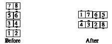

From eight chain thru: All Right Pull By; outsides Courtesy Turn and Veer Left; centers Left Touch, and the centers Courtesy Turn the ends to finish facing the same way the centers were originally facing, then As Couples Extend, to form two-faced lines.

© Copyright 1983, 1986-1988, 1995-2011 Bill Davis, John Sybalsky and CALLERLAB Inc., The International Association of Square Dance Callers. Permission to reprint, republish, and create derivative works without royalty is hereby granted, provided this notice appears. Publication on the Internet of derivative works without royalty is hereby granted provided this notice appears. Permission to quote parts or all of this document without royalty is hereby granted, provided this notice is included. Information contained herein shall not be changed nor revised in any derivation or publication.